Landing — 古老珍藏 v04
古老珍藏：工藝與年代，而非華麗裝飾。v04 修訂開蓋進度、外側扣鎖與左下角修補。下列角度是設計目標，bbox 是實際像素量測；待整組視覺審核。開 750ms／關 660ms 沿用 v03，未調整逐段時間。
awaiting-calibration · reviewOnly: true · runtimePromotion: false
整組素材比較：金幣為主、少量寶石、內容物不外溢；不產生金錢、成就或帳務異動。標題、手機與其他物件固定。
共同畫布104×120，local ground(52,120)，scene origin(92,230)，world ground(144,350)。hinge guide(52,84)須人工核對。開啟750ms／關閉660ms，逐段時間不同，僅供素材連續性預覽，不是最終產品時序。
固定位置場景預覽
目前狀態：closed
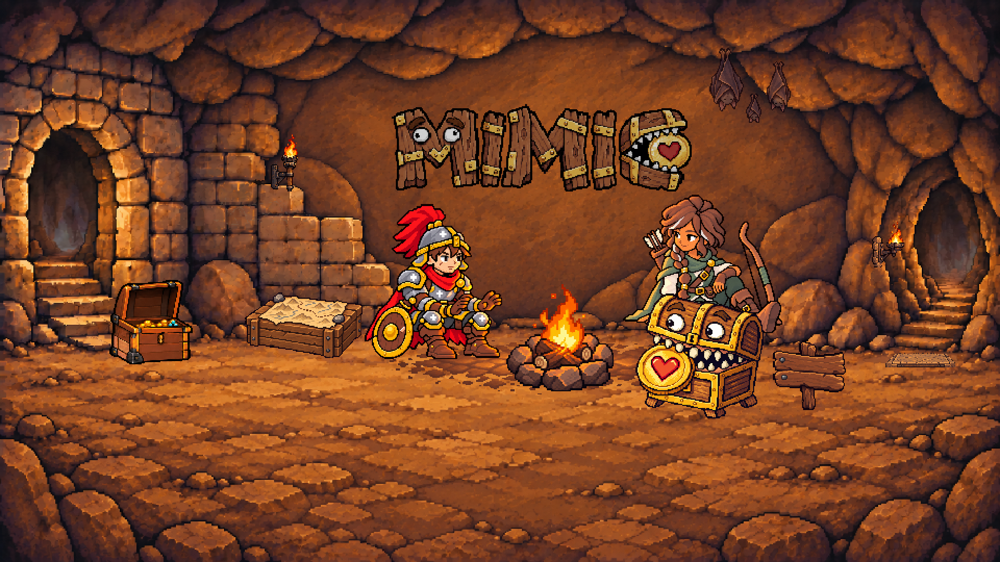
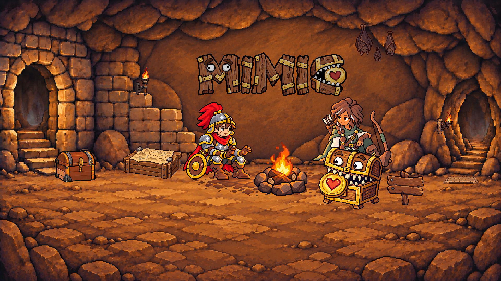
桌機：單行 MIMIC
字標 288 × 84 logical px；左上 376, 100；輸出 1920 × 1080。
手機：共用交錯兩行版
字標 148 × 98 logical px；左上 130, 59；輸出 390 × 600。
四態實際尺寸、相同倍率與真實灰階
closed
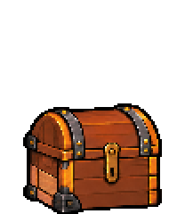
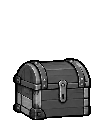
cracked
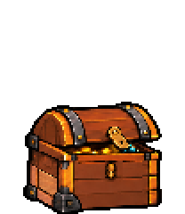
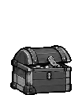
half-open
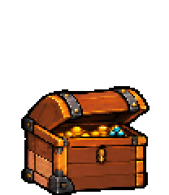
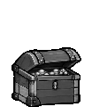
open
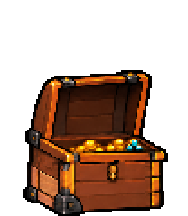
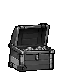
必要過渡幀（同一物件，不是新候選）
latch-release
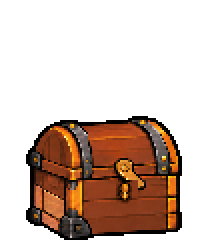
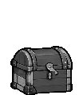
unlatched
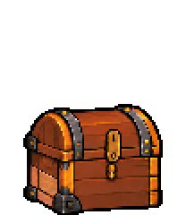
opening-wide
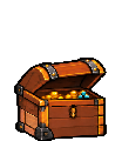
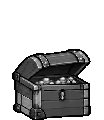
near-open
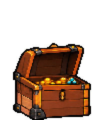
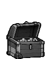
v01原四態家族（保留、尚未核准）
closed
cracked
half-open
open
可重現開／關節奏
{
"open": [
[
"latch-release",
100
],
[
"unlatched",
90
],
[
"cracked",
150
],
[
"half-open",
90
],
[
"opening-wide",
70
],
[
"near-open",
110
],
[
"open",
140
]
],
"close": [
[
"near-open",
120
],
[
"opening-wide",
100
],
[
"half-open",
80
],
[
"cracked",
70
],
[
"unlatched",
90
],
[
"latch-release",
80
],
[
"closed",
120
]
]
}after為進入該幀前的等待毫秒；state只有四個，frame共有八個。此節奏僅供review。
原閉合候選與戰士基準


四張真實灰階場景
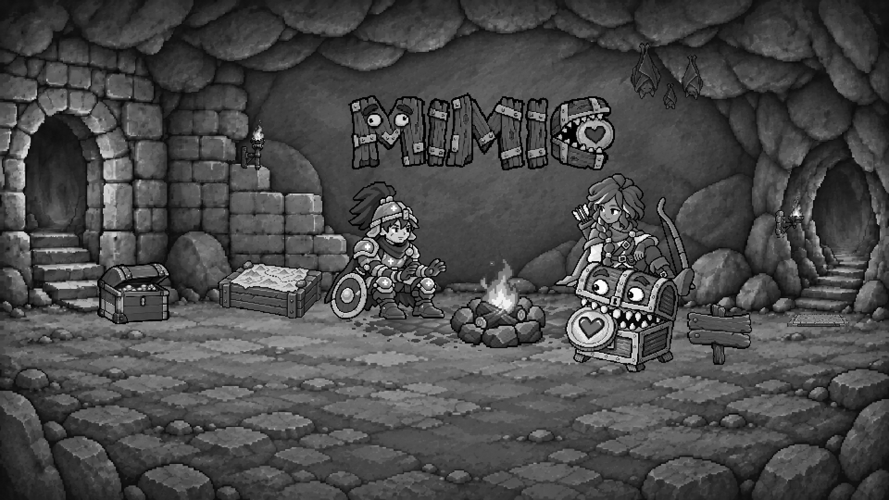
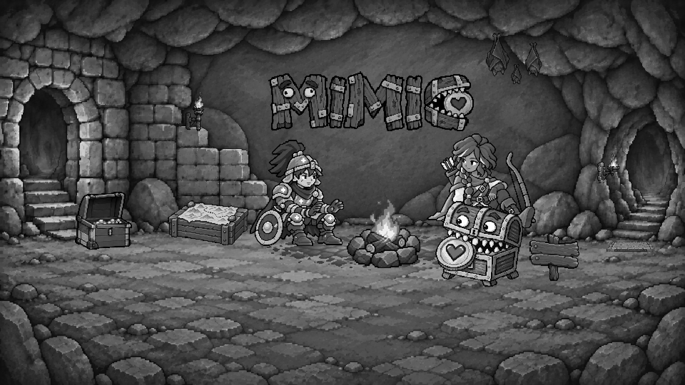


v03 對照（未核准，原檔唯讀）
v03 closed

v03 latch-release

v03 unlatched

v03 cracked

v03 half-open

v03 opening-wide

v03 near-open

v03 open

開蓋進度量測表（2× alpha bbox top）
| frame | 目標角 | v03 top | v04 top | v04 上升 |
|---|---|---|---|---|
| closed | 0° | 114 | 116 | — |
| latch-release | 0° | 112 | 116 | — |
| unlatched | 0° | 112 | 116 | — |
| cracked | 12° | 110 | 114 | — |
| half-open | 35° | 92 | 106 | 8 |
| opening-wide | 58° | 90 | 98 | 8 |
| near-open | 80° | 86 | 86 | 12 |
| open | 100° | 82 | 78 | 8 |
v04 實測
- cracked→open 總上升 36px；逐步 8 / 8 / 12 / 8px
- 單調：true；最大步幅 ≤40%：true；三中段兩兩 ≥3px：true；cracked ≤25%：true
v03 負對照
- cracked→open 總上升 28px；逐步 18 / 2 / 4 / 4px
- 單調：true；最大步幅 ≤40%：false；三中段兩兩 ≥3px：false；cracked ≤25%：true
cracked 的可見窄縫、蓋自由上緣扣鎖、open 超垂直後傾均需目視；高度量測不等同角度量測。先蓋後扣的關閉順序及原時序保持。
唯一修補：左下角實際尺寸與局部放大
左側下方較淺胡桃木補換段與角落暗鐵片。固定局部 (15,96,31,23)，無插值裁切；八格共用 closed 下半部。請核對 1×／灰階／桌機場景的辨識度，以及兩顆方釘是否足夠清楚。機構與美術仍由整組視覺審核決定。
實際 ImageGen 編修紀錄
01 直接編修 v03 family-source，以兩張戰士為風格參照；02–05 逐次編修前稿，03 額外參照原 v03。選定 05，原始 bytes 不變。沒有逐格 crop-fit、位移或縮放。
- attempt-01 · 編修 samples/derivations/treasure-chest-states-v03/family-source.png
原始輸出 · 實際 promptb412ac94bd0898dbbe6ac59bc6de2c698f71426c680820e77ad86277eab55994
references: samples/avatar-classes/masters/warrior.png · samples/landing-warm-rest/layers/A-desktop/warrior.png - attempt-02 · 編修 samples/derivations/treasure-chest-states-v04/attempt-01.png
原始輸出 · 實際 prompt4a2e17d9c35cd9535fcee32c66968fe60f4e4422fa5defc7dbb762842cee8590
references: 無 - attempt-03 · 編修 samples/derivations/treasure-chest-states-v04/attempt-02.png
原始輸出 · 實際 prompta263690802f1f034254cd9d284a9bc106f7680076cc0f10b5c7d9d8d6d29871e
references: samples/derivations/treasure-chest-states-v03/family-source.png - attempt-04 · 編修 samples/derivations/treasure-chest-states-v04/attempt-03.png
原始輸出 · 實際 promptd71ef7eff6456f89e0233be4bcfccafc68443229c5470e331501750ebe9e31d7
references: 無 - attempt-05 · 編修 samples/derivations/treasure-chest-states-v04/attempt-04.png
原始輸出 · 實際 prompt494f26780f351601962c58630857fc21aea60dafa0a00c3bb3c31e7282eb45ca
references: 無


原場景與 v03 桌機場景對照


箱身 staple 使用 unlatched 固定區域 (59,90,10,13)，release 後像素一致；closed 時被垂下扣鎖遮擋。左下角修補仍重用 closed 箱身。
前三格只釋放扣鎖：蓋子區域重用 closed（row 90 以上、移動扣鎖範圍以外），消除來源圖的閉蓋漂移；所有取樣仍使用單一 lattice 與共同 transform。
等待整組視覺審核
檢查四態箱身穩定、鉸鏈、遮擋、寶物不外溢、材質與戰士顆粒。若開蓋遮住其他道具、角色、通道或UI，回報具體衝突，不移動周邊。沒有核准整組圖稿、Scenes或產品互動。
ImageGen來源 · 實際prompt · lineage · manifest

exact SHA-256 與實際尺寸
ancient-treasure-chest.manifest.json | 60d9dcee5b165941e632a5377b9cc38d7632a5ff2a2688c54ef387d3bcc06a7c |
restored-treasure-chest.manifest.json | 9ba33a5cef1439aa2fcb7b840f5b37b8424600a62a36bc9701d3e12a6969abbc |
treasure-chest-states.manifest.json | 61f1bf4e2ec7efca3e3c80a08af1852f674868094d8912962d2c40082c636cb1 |
landing-title-placement.manifest.json | df90822ccb7fdd671899f08ec70c0d1535f16393d5b0ca4007aac0642d7eb1b5 |
samples/derivations/treasure-chest-states-v01/family-source.png1254×1254 | a666381ea471a8670f3bcff8b0acf534a0bc2a3e969a264b03219af0233100ce |
samples/landing-chest-material-v01/ordinary-chest.png78×66 | fc2a8eb5b6337658e3056cc4cfc014328a4ec0c2920d800f9daa37451aef729b |
samples/avatar-classes/masters/warrior.png512×512 | cad8b04c066a149a081095ea7507091fd92fa65fdfd95ca9a40366cfcdbb9447 |
samples/landing-warm-rest/layers/A-desktop/warrior.png132×149 | fa155d31d7668e7d3660f89f4a90de865ca978abd725aa8bc5f591342eb252e1 |
samples/treasure-chest-states-v01/closed-logical.png960×540 | 984f503fe910121fc5cf130d3204bb66276140e5403a2b7f255eb332abc87d5f |
samples/derivations/treasure-chest-states-v04/family-source.png1792×878 | 494f26780f351601962c58630857fc21aea60dafa0a00c3bb3c31e7282eb45ca |
samples/derivations/treasure-chest-states-v04/prompt.md | 564ffe54a2f5e73d36c854b5f4a1328351108af38739d90fff4f30b7f2fe0fb3 |
samples/derivations/treasure-chest-states-v04/lineage.json | c463434d7865c6ce9721e816381734b530c038c240c20f10d1c6e21858fc8e66 |
landing-title-placement-review.html | da5a81e41a8b3f5bda76732ac6c611731d87f386819883816250b5542c515c71 |
landing-chest-raster.mjs | e65cabaefeba0532516c0d8ee9576c838e5eb40d53045871ff7dfdcc978cc08a |
render-treasure-chest-states.mjs | 3a3a87d2f31d97009fb8957490cbcee8c8d43204a9ab98c161891410c5b6199e |
restored-chest.config.mjs | 50383f88a6162d175914bcbfcbfaf0645232416730131717991a561f757ea769 |
restored-chest.model.mjs | d75da1d29c5b91885dcdc526e7daaaad7886e60b81dea6d1f7bef1e44177999a |
restored-chest.controller.mjs | c1f1ac530426b145927ec59801a70c6ade75228baf00ce026375c2ee53304c48 |
restored-chest.raster.mjs | 8b8ba83f2c0112fc175f74fe0a441d4eb8b8b2fa325db74ef16a161e457e46b8 |
render-ancient-treasure-chest-v04.mjs | 299b0c1f1bc33929a2b66ebd0163e79f45898dcd4b837509a0b939777128a60e |
render-restored-treasure-chest.mjs | 01779c68162b6f5d8d4a9121bfe75b460a2a7ee0dd27385e75d191225337e5bc |
compose-ancient-treasure-chest-v04.mjs | 37e88126c9efe48ba8664465938ae736b2710fd668472b3b6d16a6f9bde8ac7e |
samples/treasure-chest-states-v04/desktop-without-chest.png960×540 | f5ed85d7c6632b5a9ad4f6fece332b916f274fc828c4c02eaa0f0038b44cc777 |
samples/treasure-chest-states-v04/closed-sprite.png104×120 | 1d3033feec912b2a8c3e8985949cccbbeadadcd02e6500999f3d7a1558d9a2bc |
samples/treasure-chest-states-v04/closed-sprite-gray.png104×120 | d3b77e3afa08f88442fd3efb26adc9fdab5997a83cab272c7e168af3ecf7b788 |
samples/treasure-chest-states-v04/closed-2x.png208×240 | ffc5c94d8f8cac1f70501da6cf0cb63a4fcafbc89bd73b4fd682d7bdcbb8fe3a |
samples/treasure-chest-states-v04/closed-logical.png960×540 | 651306bb9bc6243402c2cca45161507092cf073b034277339c5682ac919d5e2d |
samples/treasure-chest-states-v04/closed-color.png1920×1080 | a7875d25975ff7274270cc2625dde54a1d9983848bc00042b53d14ff0cfce7a7 |
samples/treasure-chest-states-v04/closed-gray.png1920×1080 | 74c42ad2edcae9df13bac62548710e4601c7d3591e6678185fc91f8ffe874564 |
samples/treasure-chest-states-v04/latch-release-sprite.png104×120 | 3791787f5338599fc110b36c94e8b3b2534933d71c671d85ee7404b25d57cd86 |
samples/treasure-chest-states-v04/latch-release-sprite-gray.png104×120 | a2aaefdc6dbd55e4ce5bc668a8d80ff52d892b268940d2f027c136c8d32cd795 |
samples/treasure-chest-states-v04/latch-release-2x.png208×240 | 0eb075a90dd85d1b66636b5a13f0587a44fc71595db7570f83121bb661360638 |
samples/treasure-chest-states-v04/latch-release-logical.png960×540 | a6477702a8374b4932316a48fd9add4c1b8ce41f81e2c989f778591d774cdea3 |
samples/treasure-chest-states-v04/latch-release-color.png1920×1080 | 4421171fbc212fa4564e18ff90fce69a8e2f66ae8a7ee810d3b8f5e9d30103f6 |
samples/treasure-chest-states-v04/latch-release-gray.png1920×1080 | b0397998be3d8dfb74fab2dd826f0f067a77fea8c5fb977a7d5d6912e46022b7 |
samples/treasure-chest-states-v04/unlatched-sprite.png104×120 | 8babcc508cfdd3538fc6646631ce51658a48a3a8d0f66f7475f2e3927b4c8919 |
samples/treasure-chest-states-v04/unlatched-sprite-gray.png104×120 | 1a94c514dbaec51d23c28d58cf228d4c4dd7c163542ba2203a776dd6ce840898 |
samples/treasure-chest-states-v04/unlatched-2x.png208×240 | c67d0573985a6c86f4377727a0bdbaafee7bc27e03b31d4974d47761015b3b2e |
samples/treasure-chest-states-v04/unlatched-logical.png960×540 | acd3c34e0b87e4b70926e6612b14f651d69349abc1ab9c86cd7e5a4bd2986f7b |
samples/treasure-chest-states-v04/unlatched-color.png1920×1080 | 90612cbfc2a5b8bbe6ff92b92c6e0267e6a33720c3bbe41bdf1daa3125d93f2b |
samples/treasure-chest-states-v04/unlatched-gray.png1920×1080 | 1e3e83b8bf2c9b0c22d19179fc062cd23b19df97c4a65dd31961b26be6e95c8e |
samples/treasure-chest-states-v04/cracked-sprite.png104×120 | d81237e032d782965d5012ea69a37ec598dad888a534d6323ab4db442f430dc2 |
samples/treasure-chest-states-v04/cracked-sprite-gray.png104×120 | 5d5453fbb0edf1bf7890c7c2ee0a2c3fc55789d1b0024b18823c164dfbff22dc |
samples/treasure-chest-states-v04/cracked-2x.png208×240 | 89b13df8ea0caa9ea9d17be6860a1e4c73878eeea061b44659d6508ebe960afd |
samples/treasure-chest-states-v04/cracked-logical.png960×540 | 0cc4f32debf05522ae57e10d5479c349d043b8cefd0397237213c3695587b370 |
samples/treasure-chest-states-v04/cracked-color.png1920×1080 | 1fef4ec2b6a2e6262ca5801630393ffa72be1708dd1732f2f25de01ddc5a2fa7 |
samples/treasure-chest-states-v04/cracked-gray.png1920×1080 | 4aa0adf9afa1207d4301df30a71b31f1ddd2e278f1b426825c20cb0fd1e2e288 |
samples/treasure-chest-states-v04/half-open-sprite.png104×120 | c353a103abea643bc643e148726b911b4af03d7b73a95b4f270752f5c264ee7c |
samples/treasure-chest-states-v04/half-open-sprite-gray.png104×120 | 8dc5bac45572659cb27efa5337de2cb447dd199e5da6831d570db59537cf7adb |
samples/treasure-chest-states-v04/half-open-2x.png208×240 | f8abb47e2d64a65fa453064ca15235c7eac9cbff58c443c2b2dbffbfa28bb5e8 |
samples/treasure-chest-states-v04/half-open-logical.png960×540 | da30925bd66d95676e7523adeb1a86e4b51032e89a9a73d950b9a71436e7cb8f |
samples/treasure-chest-states-v04/half-open-color.png1920×1080 | e864a05706a36f838f02bddcf424b9aaaa875ffd8b2cfcb9f9c076f726ed9c1c |
samples/treasure-chest-states-v04/half-open-gray.png1920×1080 | 7ea6f955c28c38b9b1f9977af663bf5e76d80bf027d5fdc98c05600dd714029e |
samples/treasure-chest-states-v04/opening-wide-sprite.png104×120 | f741d661b53ef9c00d593502c8507373a2e907ea6e6b704ef90745c7e2f24ae7 |
samples/treasure-chest-states-v04/opening-wide-sprite-gray.png104×120 | b1760b4f626b8acfa8572859cb9479d79dd65dfe3962b0a00183a99ec50af04b |
samples/treasure-chest-states-v04/opening-wide-2x.png208×240 | fbe7651e73b5ca3b6ca7f1e8c052ecdbc66b58c3958afc0db09a7ed5f9a10b5f |
samples/treasure-chest-states-v04/opening-wide-logical.png960×540 | 7c5e0089b4f03b4a4f3d23db680dff274815b4355fdf9c3982bf8d13030b6e6e |
samples/treasure-chest-states-v04/opening-wide-color.png1920×1080 | e56c3c6f7810595f8f30eb9b5250cc739685e0f6fa65975186235afa362fcb2c |
samples/treasure-chest-states-v04/opening-wide-gray.png1920×1080 | dd5a6de7abc4347509dfc8a14cf5d53895fa0b21b97ce4ad4cb21ab52a8bc0aa |
samples/treasure-chest-states-v04/near-open-sprite.png104×120 | cb6e51044658405ce206bba76552ddabbfb7fdd9cf9c918b0ab87b5b0d4742ea |
samples/treasure-chest-states-v04/near-open-sprite-gray.png104×120 | 088cf1e977fd1f8536d2ec0686ece92ad76572fb849ddadf47cdb732c7f41699 |
samples/treasure-chest-states-v04/near-open-2x.png208×240 | 898ebf021282ac8e29c43a81da2825bfb44226e7364aa5fbc338a4f2759d03af |
samples/treasure-chest-states-v04/near-open-logical.png960×540 | 60905271cd0153e7d545ff5e4257da23c7883fe02ef944e3877cddca77fcd6f8 |
samples/treasure-chest-states-v04/near-open-color.png1920×1080 | ea93979c1ab818b6f674eb878c995b0c7e6b6180aed2c629ddf50491794b3535 |
samples/treasure-chest-states-v04/near-open-gray.png1920×1080 | 0bf5b14c34354c8ed355647fd0b6ec7691443f904474a45ba014586712e102ab |
samples/treasure-chest-states-v04/open-sprite.png104×120 | 1da4b9c752012114db7256f928598628ccd222536e9a32112e8b938869712654 |
samples/treasure-chest-states-v04/open-sprite-gray.png104×120 | 16b65e1760bc0f8916655e034df23b70e7c0dff7ccf64e7e7c6b58a0eb6a73e9 |
samples/treasure-chest-states-v04/open-2x.png208×240 | 99bd2a95996433e08dc599df0fbe2e26c2fa9374191aafd3aab507b9587facb3 |
samples/treasure-chest-states-v04/open-logical.png960×540 | d9d43cdd996be64b414ab53ac18730e2942e87894f6ae5e9e7739f92523a6369 |
samples/treasure-chest-states-v04/open-color.png1920×1080 | dfe20c6be5ed0cb9c62ca12cb10d8bc334613ca07b8de2fd739284a8dc897e16 |
samples/treasure-chest-states-v04/open-gray.png1920×1080 | 5d9082690accee0b032ff493de452d8cdf47e98aa62c96844eedcdb485986ef2 |
samples/landing-title-placement-v01/phone-staggered-logical.png390×600 | dae2872edddfa14d68b37c7b5475c4680381db0826dc417cb8a07ee370385ecf |
samples/landing-title-placement-v01/phone-staggered-color.png390×600 | dae2872edddfa14d68b37c7b5475c4680381db0826dc417cb8a07ee370385ecf |
samples/landing-title-placement-v01/phone-staggered-gray.png390×600 | 317ad09e18904b7bca29496418a59a0aa5f9c72f611c4d23c83661fbe536c2ac |
samples/landing-a-title/wordmarks/phone-staggered.png148×98 | 8fd7d677df46cc77478518de2a9f68ff77b8ae4d28deb25e6b11ad5ba6ee8f1c |
samples/landing-a-title/wordmarks/desktop-single.png288×84 | 4ecc5bc6788f34854aac81a54d35b85fad9648c9f9d6499200f825246976ff31 |